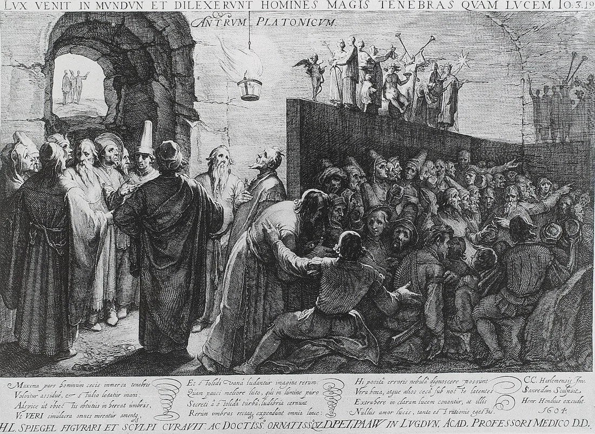

Recupera
De memória, sem abrir o caderno.
De memória
Lembra-te de uma imagem que, à primeira vista, te fez pensar uma coisa que depois não se confirmou. O que viste primeiro?
O que te fez mudar de ideia: uma informação nova, outra pessoa ou outro ângulo?
Vê
Observa primeiro. Lê depois.
Observa a imagem antes de ler a legenda. Aponta três elementos visíveis. Ainda não lhes atribuas intenções.
Descrever é indicar o que está visível. Interpretar é propor um sentido a partir de pistas. Uma legenda orienta a leitura, mas não transforma uma hipótese em facto.
Obras e materiais
Decide
Primeiro em silêncio, cada pessoa. Depois em grupo.
Sem ecrã
Primeiro, em silêncio
Separa duas observações de uma interpretação.
Depois, em grupo
- Propõe outra leitura e identifica a pista que a sustenta.
- Que informação permitiria escolher entre as duas leituras?
Comparar razões
Uma interpretação precisa de pistas. Uma explicação possível não é ainda uma conclusão: indica o que observaste e o que falta verificar.
Faz
Em papel ou no ficheiro do grupo.
Em papel
Escreve uma pergunta que a imagem deixa em aberto. Escolhe um detalhe que ajude a investigá-la e uma fonte onde procurar contexto.
GuardarUma descrição, uma hipótese, uma pergunta.
Rever com outra pessoa
Troca a pergunta com um colega. Verifica se permite investigar uma situação concreta. Revê uma palavra que a torne mais precisa.
Leva
Em papel, antes de sair.
Em papel
Em papel, antes de sair
Numa frase: que diferença há entre ver e compreender?
Confirma
- Distingui observação e hipótese.
- Apontei uma pista.
- Formulei uma pergunta concreta.